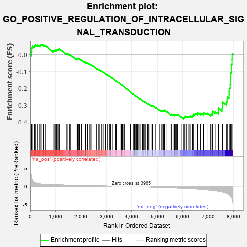
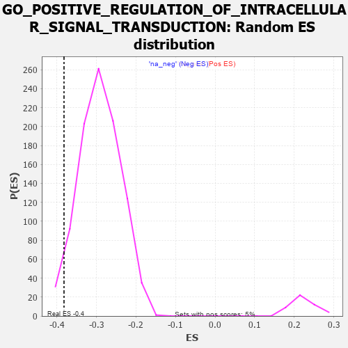

| | | Dataset | 7d |
| Phenotype | NoPhenotypeAvailable |
| Upregulated in class | na_neg |
| GeneSet | GO_POSITIVE_REGULATION_OF_INTRACELLULAR_SIGNAL_TRANSDUCTION |
| Enrichment Score (ES) | -0.38210872 |
| Normalized Enrichment Score (NES) | -1.3105124 |
| Nominal p-value | 0.03567681 |
| FDR q-value | 0.46383807 |
| FWER p-Value | 1.0 |
Table: GSEA Results Summary

Fig 1: Enrichment plot: GO_POSITIVE_REGULATION_OF_INTRACELLULAR_SIGNAL_TRANSDUCTION
Profile of the Running ES Score & Positions of GeneSet Members on the Rank Ordered List
| PROBE | GENE SYMBOL | GENE_TITLE | RANK IN GENE LIST | RANK METRIC SCORE | RUNNING ES | CORE ENRICHMENT | | 1 | TGFB3 | | | 49 | 2.654 | 0.0187 | No |
| 2 | RAC2 | | | 60 | 2.442 | 0.0405 | No |
| 3 | IRS1 | | | 98 | 1.659 | 0.0513 | No |
| 4 | AXIN1 | | | 166 | 1.159 | 0.0537 | No |
| 5 | WNT16 | | | 198 | 1.072 | 0.0598 | No |
| 6 | HGF | | | 276 | 0.870 | 0.0581 | No |
| 7 | GSK3A | | | 351 | 0.745 | 0.0556 | No |
| 8 | BAX | | | 387 | 0.711 | 0.0578 | No |
| 9 | RAD9A | | | 418 | 0.681 | 0.0604 | No |
| 10 | LRP1 | | | 470 | 0.648 | 0.0600 | No |
| 11 | PKN1 | | | 535 | 0.619 | 0.0576 | No |
| 12 | DHX33 | | | 605 | 0.593 | 0.0543 | No |
| 13 | STOX1 | | | 905 | 0.506 | 0.0207 | No |
| 14 | WLS | | | 907 | 0.505 | 0.0253 | No |
| 15 | PDCD4 | | | 941 | 0.497 | 0.0258 | No |
| 16 | DVL3 | | | 971 | 0.490 | 0.0267 | No |
| 17 | TELO2 | | | 1006 | 0.482 | 0.0269 | No |
| 18 | AKT1 | | | 1040 | 0.476 | 0.0271 | No |
| 19 | FZD10 | | | 1065 | 0.470 | 0.0284 | No |
| 20 | CDK10 | | | 1092 | 0.465 | 0.0295 | No |
| 21 | SRC | | | 1128 | 0.459 | 0.0293 | No |
| 22 | NCK2 | | | 1131 | 0.458 | 0.0334 | No |
| 23 | GAB1 | | | 1158 | 0.453 | 0.0343 | No |
| 24 | P2RY1 | | | 1416 | 0.407 | 0.0052 | No |
| 25 | PTBP1 | | | 1441 | 0.402 | 0.0059 | No |
| 26 | TIMP2 | | | 1478 | 0.394 | 0.0050 | No |
| 27 | SOS1 | | | 1547 | 0.384 | -0.0002 | No |
| 28 | ERP29 | | | 1589 | 0.376 | -0.0019 | No |
| 29 | FNIP1 | | | 1798 | 0.338 | -0.0254 | No |
| 30 | GATA4 | | | 1837 | 0.330 | -0.0272 | No |
| 31 | TRIM5 | | | 1852 | 0.327 | -0.0259 | No |
| 32 | NFAT5 | | | 1856 | 0.326 | -0.0232 | No |
| 33 | NUP62 | | | 1871 | 0.324 | -0.0219 | No |
| 34 | PAK3 | | | 1889 | 0.322 | -0.0211 | No |
| 35 | HACD3 | | | 1932 | 0.315 | -0.0235 | No |
| 36 | ROR1 | | | 1993 | 0.306 | -0.0283 | No |
| 37 | RAF1 | | | 2011 | 0.303 | -0.0277 | No |
| 38 | SYK | | | 2186 | 0.278 | -0.0474 | No |
| 39 | MEIS3 | | | 2188 | 0.278 | -0.0449 | No |
| 40 | C1QBP | | | 2189 | 0.278 | -0.0423 | No |
| 41 | SHC2 | | | 2263 | 0.266 | -0.0491 | No |
| 42 | SEC13 | | | 2330 | 0.256 | -0.0552 | No |
| 43 | MIF | | | 2357 | 0.252 | -0.0561 | No |
| 44 | HIPK2 | | | 2389 | 0.247 | -0.0578 | No |
| 45 | MET | | | 2430 | 0.240 | -0.0607 | No |
| 46 | EMC10 | | | 2607 | 0.211 | -0.0813 | No |
| 47 | PUM2 | | | 2627 | 0.209 | -0.0818 | No |
| 48 | SASH1 | | | 2682 | 0.201 | -0.0868 | No |
| 49 | PHB2 | | | 2712 | 0.197 | -0.0887 | No |
| 50 | DDX1 | | | 2718 | 0.196 | -0.0875 | No |
| 51 | ATR | | | 2800 | 0.183 | -0.0961 | No |
| 52 | BECN1 | | | 2828 | 0.179 | -0.0979 | No |
| 53 | FGFR2 | | | 2895 | 0.167 | -0.1048 | No |
| 54 | FRMD1 | | | 2962 | 0.156 | -0.1118 | No |
| 55 | PIAS4 | | | 3034 | 0.145 | -0.1196 | No |
| 56 | TMED4 | | | 3106 | 0.136 | -0.1274 | No |
| 57 | GPX1 | | | 3109 | 0.135 | -0.1264 | No |
| 58 | ERN2 | | | 3160 | 0.129 | -0.1316 | No |
| 59 | GCNT2 | | | 3162 | 0.128 | -0.1305 | No |
| 60 | TFG | | | 3243 | 0.114 | -0.1397 | No |
| 61 | TAB1 | | | 3351 | 0.097 | -0.1525 | No |
| 62 | DDX3X | | | 3388 | 0.091 | -0.1563 | No |
| 63 | HDAC3 | | | 3528 | 0.072 | -0.1734 | No |
| 64 | GPR18 | | | 3578 | 0.063 | -0.1791 | No |
| 65 | CHERP | | | 3587 | 0.062 | -0.1796 | No |
| 66 | MAPK3 | | | 3589 | 0.062 | -0.1791 | No |
| 67 | STK25 | | | 3602 | 0.059 | -0.1801 | No |
| 68 | CBL | | | 3621 | 0.056 | -0.1819 | No |
| 69 | FIS1 | | | 3654 | 0.051 | -0.1855 | No |
| 70 | WDR59 | | | 3692 | 0.045 | -0.1899 | No |
| 71 | DAXX | | | 3722 | 0.038 | -0.1932 | No |
| 72 | PPM1A | | | 3953 | 0.002 | -0.2227 | No |
| 73 | SOS2 | | | 3963 | 0.000 | -0.2239 | No |
| 74 | IGF1R | | | 3970 | -0.002 | -0.2246 | No |
| 75 | CSF1 | | | 4074 | -0.019 | -0.2377 | No |
| 76 | PDE8A | | | 4097 | -0.023 | -0.2403 | No |
| 77 | TRAF1 | | | 4104 | -0.024 | -0.2408 | No |
| 78 | MTOR | | | 4114 | -0.025 | -0.2418 | No |
| 79 | ABL1 | | | 4125 | -0.027 | -0.2428 | No |
| 80 | PLCE1 | | | 4127 | -0.028 | -0.2427 | No |
| 81 | CRK | | | 4139 | -0.031 | -0.2438 | No |
| 82 | RRAGD | | | 4183 | -0.039 | -0.2489 | No |
| 83 | RRAGA | | | 4223 | -0.046 | -0.2535 | No |
| 84 | RPTOR | | | 4252 | -0.050 | -0.2566 | No |
| 85 | WNT11 | | | 4282 | -0.056 | -0.2598 | No |
| 86 | BAG4 | | | 4314 | -0.061 | -0.2632 | No |
| 87 | ADRB2 | | | 4352 | -0.068 | -0.2673 | No |
| 88 | PRR5L | | | 4418 | -0.080 | -0.2749 | No |
| 89 | MYDGF | | | 4429 | -0.081 | -0.2754 | No |
| 90 | ERCC6 | | | 4464 | -0.087 | -0.2790 | No |
| 91 | LRRK2 | | | 4467 | -0.087 | -0.2784 | No |
| 92 | HIP1 | | | 4485 | -0.092 | -0.2797 | No |
| 93 | ILK | | | 4510 | -0.096 | -0.2819 | No |
| 94 | NPTN | | | 4519 | -0.098 | -0.2820 | No |
| 95 | NTRK2 | | | 4543 | -0.104 | -0.2840 | No |
| 96 | GATA3 | | | 4614 | -0.120 | -0.2918 | No |
| 97 | DLG5 | | | 4619 | -0.121 | -0.2912 | No |
| 98 | FGFR3 | | | 4656 | -0.129 | -0.2946 | No |
| 99 | RAP1B | | | 4706 | -0.140 | -0.2996 | No |
| 100 | RTN4 | | | 4783 | -0.154 | -0.3079 | No |
| 101 | PIM2 | | | 4789 | -0.155 | -0.3071 | No |
| 102 | TNIK | | | 4804 | -0.158 | -0.3074 | No |
| 103 | P2RX4 | | | 4813 | -0.161 | -0.3069 | No |
| 104 | FBXW7 | | | 4816 | -0.161 | -0.3056 | No |
| 105 | TAOK3 | | | 4823 | -0.162 | -0.3048 | No |
| 106 | CASP1 | | | 4932 | -0.185 | -0.3170 | No |
| 107 | FZD4 | | | 4940 | -0.186 | -0.3161 | No |
| 108 | EP300 | | | 4941 | -0.186 | -0.3144 | No |
| 109 | DRD2 | | | 5088 | -0.221 | -0.3310 | No |
| 110 | ITSN1 | | | 5094 | -0.222 | -0.3296 | No |
| 111 | FLCN | | | 5140 | -0.235 | -0.3331 | No |
| 112 | TBX1 | | | 5166 | -0.241 | -0.3341 | No |
| 113 | NEK10 | | | 5180 | -0.244 | -0.3334 | No |
| 114 | ATM | | | 5210 | -0.249 | -0.3348 | No |
| 115 | GPR4 | | | 5219 | -0.250 | -0.3335 | No |
| 116 | DDX21 | | | 5231 | -0.252 | -0.3325 | No |
| 117 | PTEN | | | 5262 | -0.261 | -0.3339 | No |
| 118 | CDK1 | | | 5264 | -0.262 | -0.3316 | No |
| 119 | EPHA4 | | | 5273 | -0.265 | -0.3301 | No |
| 120 | STK19 | | | 5297 | -0.270 | -0.3305 | No |
| 121 | FZD5 | | | 5386 | -0.292 | -0.3390 | No |
| 122 | FGFR1 | | | 5543 | -0.332 | -0.3559 | No |
| 123 | WDR24 | | | 5568 | -0.338 | -0.3558 | No |
| 124 | SPHK1 | | | 5576 | -0.339 | -0.3535 | No |
| 125 | ROR2 | | | 5626 | -0.353 | -0.3565 | No |
| 126 | CASP8 | | | 5678 | -0.369 | -0.3596 | No |
| 127 | MADD | | | 5686 | -0.371 | -0.3570 | No |
| 128 | DGKI | | | 5725 | -0.384 | -0.3582 | No |
| 129 | CALCR | | | 5730 | -0.386 | -0.3551 | No |
| 130 | TLR2 | | | 5761 | -0.395 | -0.3552 | No |
| 131 | ADA | | | 5798 | -0.405 | -0.3560 | No |
| 132 | VAPA | | | 5939 | -0.449 | -0.3698 | No |
| 133 | RAC1 | | | 6036 | -0.484 | -0.3775 | Yes |
| 134 | FZD8 | | | 6051 | -0.490 | -0.3747 | Yes |
| 135 | CALR | | | 6077 | -0.499 | -0.3732 | Yes |
| 136 | DBNL | | | 6084 | -0.501 | -0.3693 | Yes |
| 137 | UBB | | | 6090 | -0.503 | -0.3652 | Yes |
| 138 | ROCK1 | | | 6152 | -0.520 | -0.3681 | Yes |
| 139 | INSR | | | 6204 | -0.538 | -0.3696 | Yes |
| 140 | CDC42 | | | 6236 | -0.548 | -0.3684 | Yes |
| 141 | STK39 | | | 6274 | -0.563 | -0.3679 | Yes |
| 142 | TRAF7 | | | 6290 | -0.571 | -0.3644 | Yes |
| 143 | BIRC3 | | | 6366 | -0.603 | -0.3684 | Yes |
| 144 | CDON | | | 6378 | -0.607 | -0.3640 | Yes |
| 145 | UBE2N | | | 6407 | -0.621 | -0.3618 | Yes |
| 146 | CSK | | | 6428 | -0.630 | -0.3584 | Yes |
| 147 | MALT1 | | | 6432 | -0.634 | -0.3528 | Yes |
| 148 | SOX2 | | | 6477 | -0.652 | -0.3523 | Yes |
| 149 | TRPV4 | | | 6515 | -0.668 | -0.3508 | Yes |
| 150 | P2RX5 | | | 6576 | -0.699 | -0.3519 | Yes |
| 151 | ROBO1 | | | 6577 | -0.699 | -0.3453 | Yes |
| 152 | PAK1 | | | 6691 | -0.757 | -0.3527 | Yes |
| 153 | EGFR | | | 6708 | -0.765 | -0.3475 | Yes |
| 154 | NET1 | | | 6803 | -0.816 | -0.3519 | Yes |
| 155 | ADAM9 | | | 6808 | -0.819 | -0.3447 | Yes |
| 156 | CSPG4 | | | 6918 | -0.878 | -0.3504 | Yes |
| 157 | DNM1L | | | 6963 | -0.913 | -0.3475 | Yes |
| 158 | RYK | | | 7102 | -1.000 | -0.3558 | Yes |
| 159 | DDX5 | | | 7152 | -1.037 | -0.3523 | Yes |
| 160 | AR | | | 7169 | -1.046 | -0.3445 | Yes |
| 161 | PTPRJ | | | 7180 | -1.054 | -0.3358 | Yes |
| 162 | CIB1 | | | 7280 | -1.152 | -0.3377 | Yes |
| 163 | GRM1 | | | 7404 | -1.272 | -0.3415 | Yes |
| 164 | LRRD1 | | | 7406 | -1.273 | -0.3296 | Yes |
| 165 | UBC | | | 7410 | -1.274 | -0.3180 | Yes |
| 166 | SHOC2 | | | 7546 | -1.463 | -0.3215 | Yes |
| 167 | CALM1 | | | 7567 | -1.499 | -0.3100 | Yes |
| 168 | LITAF | | | 7572 | -1.511 | -0.2962 | Yes |
| 169 | TRAF4 | | | 7573 | -1.514 | -0.2820 | Yes |
| 170 | BOK | | | 7715 | -1.817 | -0.2829 | Yes |
| 171 | RNF31 | | | 7744 | -1.895 | -0.2687 | Yes |
| 172 | P2RY8 | | | 7750 | -1.912 | -0.2513 | Yes |
| 173 | TRAF6 | | | 7818 | -2.157 | -0.2396 | Yes |
| 174 | PKD2 | | | 7822 | -2.167 | -0.2195 | Yes |
| 175 | GRM4 | | | 7847 | -2.393 | -0.2000 | Yes |
| 176 | TRAF2 | | | 7861 | -2.481 | -0.1783 | Yes |
| 177 | CALM3 | | | 7869 | -2.525 | -0.1554 | Yes |
| 178 | FYN | | | 7881 | -2.622 | -0.1321 | Yes |
| 179 | TRAF3 | | | 7886 | -2.695 | -0.1072 | Yes |
| 180 | MIB2 | | | 7902 | -2.813 | -0.0826 | Yes |
| 181 | PLCB1 | | | 7904 | -2.841 | -0.0560 | Yes |
| 182 | ARRB1 | | | 7935 | -3.377 | -0.0280 | Yes |
| 183 | TRAF5 | | | 7938 | -3.448 | 0.0042 | Yes |
Table: GSEA details [plain text format]

Fig 2: GO_POSITIVE_REGULATION_OF_INTRACELLULAR_SIGNAL_TRANSDUCTION: Random ES distribution
Gene set null distribution of ES for GO_POSITIVE_REGULATION_OF_INTRACELLULAR_SIGNAL_TRANSDUCTION